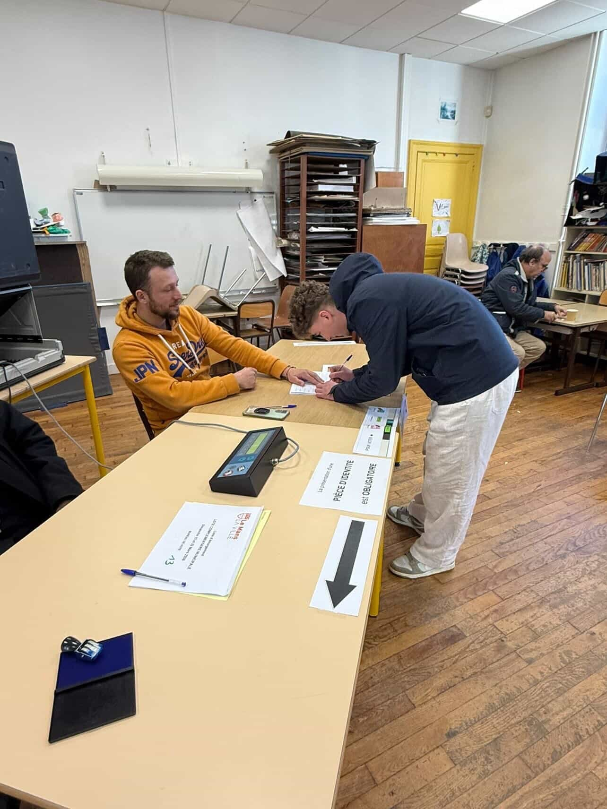
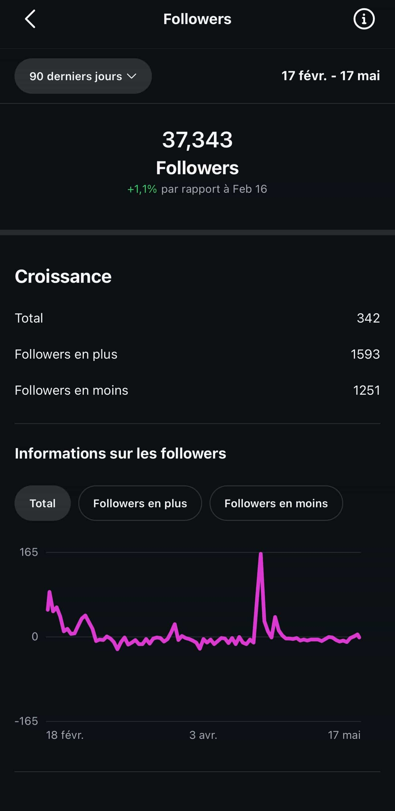
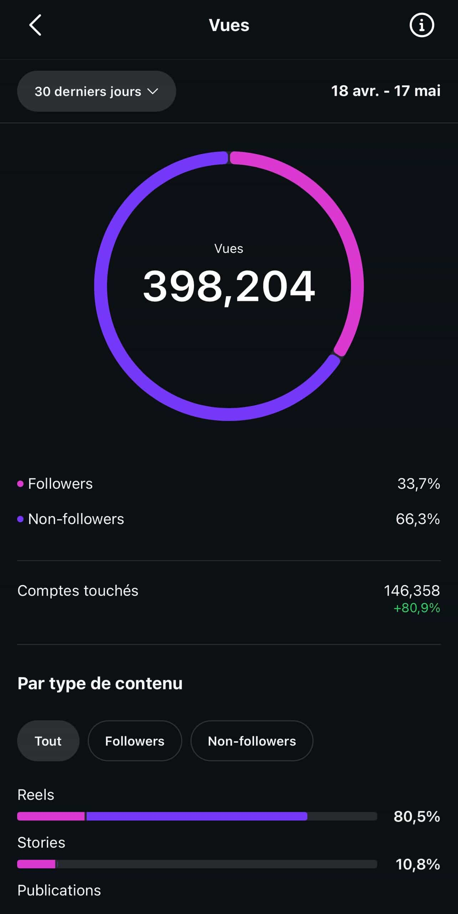

Maxime Lorne est étudiant en première année de BUT Gestion des Entreprises et des Administrations à l'IUT d'Orléans. Né au Mans, formé au lycée Notre-Dame, il vit aujourd'hui à Orléans en résidence universitaire. Voilà pour la carte d'identité. Le reste mérite quelques pages.
Carte d'identité
Maxime Lorne, 20 ans
Né au Mans (72). Vit à Orléans depuis septembre 2025. Permis B en cours.
BUT GEA · 1ère année
IUT d'Orléans, Université d'Orléans. Spécialité GEMA visée en BUT2. Référente : Mme Callis.
Français · Anglais B1 · Espagnol A2
Niveaux conformes au CECRL. Anglais opérationnel à l'oral et à l'écrit pour des échanges courants.
Alternance + 4L Trophy 2027
Recherche d'alternance en commerce, marketing ou management pour la rentrée 2026. Président de l'association « La 4L sans freins » en cours de structuration.
16 personnalités : ENFJ-A, le « Protagoniste »
Le test des 16 personnalités, version popularisée du Myers-Briggs, classe Maxime dans le type ENFJ-A, surnommé « le Protagoniste ». Un profil qui concerne environ 2,5 % de la population mondiale et qui se reconnaît à quatre traits de fond.
Il recharge ses batteries au contact des autres. Préfère travailler en groupe et fonctionne mieux par l'échange direct que par la réflexion solitaire.
Il regarde les possibilités plus que les détails. Aime les projets qui ont du sens à long terme, moins ceux qui se résument à une checklist d'exécution.
Il décide avec l'humain en tête. Cherche d'abord l'harmonie de l'équipe avant la pure efficience technique d'une solution.
Il préfère planifier qu'improviser. Aime les structures, les délais clairs, les objectifs définis. Pas un fan du chaos créatif sans cadre.
En situation
En groupe projet, Maxime prend naturellement le rôle de coordinateur. Pas par autorité, mais par envie de fluidifier la dynamique. Il distribue les rôles, vérifie que personne ne soit largué, pousse à fixer des deadlines. Le revers : il supporte mal le conflit ouvert et porte parfois trop de choses à bout de bras pour éviter qu'une équipe ne s'enlise.
Le « -A » du profil (pour Assertive) signifie qu'il s'inquiète peu du regard des autres et qu'il se remet en question avec calme. Contrairement au « -T » (Turbulent) plus anxieux. Une force pour aborder les entretiens d'alternance qui arrivent.
Compétences transférables vers GEMA
Le profil ENFJ-A s'épanouit dans les fonctions où la coordination humaine compte autant que la technique. Management d'équipe, entrepreneuriat, conseil. Ce sont précisément les terrains sur lesquels forme la spécialité GEMA. Un poste hyper-technique en comptabilité pure sous-utiliserait ces traits.
Valeurs Schwartz : la matrice d'un engagement
Le sociologue Shalom H. Schwartz a identifié dix valeurs universelles présentes dans toutes les cultures. Chacun les hiérarchise selon son histoire et son éducation. Voici, par auto-évaluation, le classement personnel de Maxime.
Lecture
Sans surprise pour qui connaît son parcours, les deux valeurs les plus hautes — bienveillance (bien-être des proches) et universalisme (bien-être de la société entière) — reflètent dix ans de scoutisme, des maraudes régulières depuis le lycée et un engagement associatif continu.
Les valeurs basses, pouvoir et hédonisme, confirment que la recherche du statut social ou du plaisir immédiat ne sont pas les principaux moteurs. Aucune valeur n'est à zéro pour autant. Un profil très axé bienveillance peut tout de même rentrer dans une logique de performance, à condition que la performance ait un sens collectif.
Pyramide de Maslow : où en est-il aujourd'hui ?
La pyramide d'Abraham Maslow hiérarchise les besoins humains en cinq niveaux. L'idée : on ne peut s'investir pleinement dans les besoins du sommet que si ceux de la base sont satisfaits. Voici un positionnement honnête.
Accomplissement de soi
Le projet 4L Trophy, le choix de la spécialité GEMA, la recherche d'alternance : autant de chantiers en cours qui relèvent de ce niveau.
Estime
Reconnaissance dans le scoutisme (chef d'équipe), confiance des organisateurs des maraudes, validation du semestre 1 sans difficulté.
Appartenance
Cercle familial soudé, équipe 4L (« La 4L Sans Freins »), promotion BUT GEA, mouvement scout toujours actif.
Sécurité
Logement étudiant stable, soutien familial, parcours académique sans rupture.
Besoins physiologiques
Conditions matérielles assurées par la résidence universitaire et la bourse étudiante.
Les quatre premiers niveaux sont largement couverts, ce qui lui permet de mobiliser son énergie sur le sommet — l'accomplissement personnel. Cela explique pourquoi il consacre du temps à un projet humanitaire bénévole comme le 4L Trophy plutôt que de chercher uniquement la rentabilité immédiate de chaque heure.
Centres d'intérêts et compétences transférables
Les centres d'intérêts ne sont pas qu'un loisir. Chacun forge des compétences mobilisables en contexte professionnel. Voici les principaux et leur traduction concrète.
Scoutisme (10 ans, dont 3 ans chef d'équipe)

L'uniforme scout : foulard jaune et bleu, chemise beige, chapeau. Dix ans dans le mouvement.
Six ans de tennis abandonnés pour rejoindre le collectif. Le sport individuel ne lui correspondait pas. Le scoutisme, lui, propose l'inverse : la synergie, l'entraide et l'émulation d'un groupe. Trois ans comme chef d'équipe ont permis à Maxime de découvrir une dimension humaine saine de la hiérarchie. C'est ce qui l'a poussé vers les enjeux de la direction des ressources humaines.
Compétences transférables : leadership, gestion de groupe, prise de décision en autonomie, résolution de conflits, organisation d'événements complexes.
Chemin de Saint-Jacques-de-Compostelle (1 500 km en une décennie)

La borne « Km. 100 000 » sur le chemin. En famille, après plusieurs étapes étalées sur les ans.
1 500 km parcourus à pied en plusieurs étapes étalées sur une décennie. Le défi sportif et mental qui structure son rapport au temps long. Ce projet a exigé une persévérance constante, une bonne préparation physique et la capacité à surmonter l'effort quotidien. La preuve qu'un objectif ambitieux peut être atteint à condition d'accepter de marcher étape par étape.
Compétences transférables : endurance mentale, planification logistique, gestion budgétaire serrée, ouverture interculturelle, sens de l'effort continu.
Engagement politique et communauté numérique

Le citoyen qui vote
Engagement politique citoyen actif. Participation systématique aux scrutins. Suivi de l'actualité avec une exigence d'analyse de fond, pas seulement de réaction émotionnelle.

37 343 abonnés Instagram
Gestion autonome d'un compte engagé et anonyme. Au 17 mai 2026 : 37 343 followers, croissance régulière. Capture des stats de l'application Instagram en preuve.

Statistiques officielles Instagram : 398 204 vues sur 30 jours, 146 358 comptes touchés (+80,9 %).
Le compte rassemble plus de 37 000 abonnés autour de contenus politiques engagés. Sur le dernier mois glissant : 398 204 vues, 146 358 comptes touchés (+80,9 % par rapport au mois précédent), avec 80,5 % des vues issues des Reels. Cette communauté ne s'est pas constituée par hasard. Elle est le résultat d'un travail régulier sur la création de contenu, la maîtrise des algorithmes, et la gestion d'audience à forte visibilité.
Compétences transférables : marketing digital, copywriting, gestion de communauté, analyse de données d'audience, réactivité éditoriale, ligne éditoriale cohérente. Toutes ces compétences s'exporteront vers une mission marketing ou communication d'entreprise.
Autres centres d'intérêts
Maraudes hebdomadaires
« Un repas pour tous » au Mans, 18 mois de présence chaque dimanche soir. Empathie active, gestion logistique, contact humain difficile.
Sports à sensations
Au-delà de la marche de fond, Maxime pratique les sports à sensations fortes. Gestion du risque, maîtrise de soi sous adrénaline.
Lecture & cinéma
Capacité d'analyse, recul critique, curiosité intellectuelle entretenue hors cadre scolaire.
Synthèse
L'image qui se dégage de ces quatre grilles converge. Profil ENFJ-A, valeurs orientées collectif et engagement, situation matérielle qui permet de viser l'accomplissement, centres d'intérêts qui forgent des compétences de coordination et de communication.
Ce n'est pas un hasard, ni une construction a posteriori. C'est ce qui rend la projection vers GEMA crédible. La spécialité valorise ce que ce profil porte déjà spontanément. Reste à examiner le parcours académique pour vérifier la cohérence des choix scolaires avec ce profil.